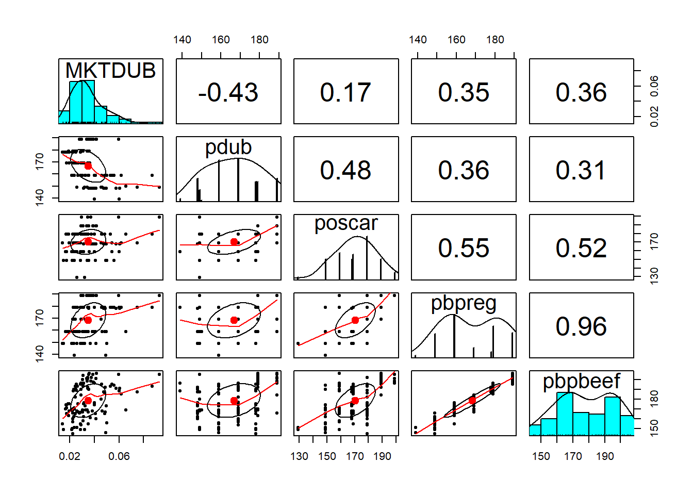

Chapter 2 Linear Regression - Part II
2.1 R Packages Used in this Chapter
Base R has a great deal of functionality, but the real power of R is that thousands of people developing packages that expand the capabilities of R. In his chapter we will be using the following packages.
tidyverseThe tidyverse is an opinionated collection of R packages designed for data science. All packages share an underlying design philosophy, grammar, and data structures (see https://www.tidyverse.org/).psychA general purpose toolbox for personality, psychometric theory and experimental psychology (see https://cran.r-project.org/package=psych)jtoolsA collection of tools to more efficiently understand and share the results of regression analyses (see https://cran.r-project.org/package=jtools)carFunctions to accompany J. Fox and S. Weisberg, An R Companion to Applied Regression, Third Edition, Sage, 2019. (see https://cran.r-project.org/package=car)
The following code chunk test weather each package has been installed, installs the package if needed, and then loads the package.
if (!require("tidyverse")) install.packages("tidyverse")
library(tidyverse)
if (!require("psych")) install.packages("psych")
library(psych)
if (!require("jtools")) install.packages("jtools")
library(jtools)
if (!require("car")) install.packages("car")
library(car)install.packages() command installs the package and the library() command loads the package. For now, you can copy this code and paste this code to use it in your own analysis.
2.2 Assumptions of the Classical Linear Regression Model
- The dependent variable is linearly related to the coefficients of the model and the model is correctly specified.
- The mean of the error term is zero.
- The error term is normally distributed. (Not absolutely necessary)
- No perfect multicollinearity. No independent variable has a perfect linear relationship with any of the other independent variables.
- The error term has a constant variance. No heteroscedasticity.
- The error terms are uncorrelated with each other. No autocorrelation or serial correlation.
- The independent variable(s) is/are uncorrelated with the equation error term.
In this chapter, we will focus on the assumptions 4, 5 and 6.
2.3 Assumption 4: Multicollinearity
Multicollinearity is the term used to describe the correlation among the independent variables. Recall that the correlation between variables is a measure of how closely the variables move together. Variables that are positively correlated move in the same direction and variables that are negatively correlated move in opposite directions. Multicollinearity can be a problem when this correlation is high.
When there is high correlation among the independent variables, it can be difficult to distinguish between the effects of each independent variable on the dependent variable. To understand this, think of the independent variables as strings pulling on the dependent variable. If the the independent variables pull in different directions, i.e. are uncorrelated with each other, then we can see the effect of each independent variable. But if the independent variables pull in the same direction, i.e. are correlated with each other, then the effects of each independent variable becomes muddled.
Multicollinearity can lead to the following problems:
- Independent variables are incorrectly found to be insignificant.
- Coefficients have incorrect signs.
Perfect multicolinearity occurs when independent variables have a correlation coefficient of 1 or -1. In this case, the perfect collinear variables must be removed to calculate a linear regression.
2.3.1 The Hot Dog Case
The Dubuque Hot Dog company produces low price hot dogs. Their competition includes Ball Park, the leading brand, and Oscar Mayer. Ball Park produces two types of hot dogs, regular and all-beef, and is planning on reducing the price its hot dogs. The CEO of Debuque would like impact on Dubuque’s market share. Here are the current and new prices.
| Company | Product | Current Price | New Price |
|---|---|---|---|
| Dubuque | Regular | 1.49 | |
| Oscar Mayer | Regular | 1.69 | |
| Ball Park | Regular | 1.79 | 1.45 |
| Ball Park | All-beef | 1.89 | 1.55 |
The CEO believes that the impact will be small because Oscar Mayer is Dubuque’s leading competitor, and presents you with the following regression analysis to support his argument.
## MODEL INFO:
## Observations: 113
## Dependent Variable: MKTDUB
## Type: OLS linear regression
##
## MODEL FIT:
## F(4,108) = 29.97881, p = 0.00000
## R² = 0.52614
## Adj. R² = 0.50859
##
## Standard errors: OLS
## ----------------------------------------------------------------------
## Est. S.E. t val. p VIF
## ----------------- ---------- --------- ---------- --------- ----------
## (Intercept) 0.04046 0.01418 2.85349 0.00518
## pdub -0.00076 0.00008 -9.46040 0.00000 1.34784
## poscar 0.00026 0.00008 3.12607 0.00228 1.65545
## pbpreg 0.00039 0.00025 1.57790 0.11751 14.69948
## pbpbeef 0.00006 0.00021 0.27832 0.78130 13.90586
## ----------------------------------------------------------------------The CEO notes that the Ball Park hot dog prices, pbpreg and pbpbeef, have an insignificant effect on Dubuque’s market share. We are given the data used to estimate the regression.
hotdog <- read.csv("data/Hotdog.csv")
head(hotdog)## MKTDUB pdub poscar pbpreg pbpbeef
## 1 0.0454565 149 169 169 180
## 2 0.0930145 149 199 189 205
## 3 0.0596656 189 199 189 205
## 4 0.0345966 189 199 189 201
## 5 0.0276536 189 169 159 166
## 6 0.0294224 189 199 189 196Deffinitions of each variables:
- MKTDUB: Dubuque’s market share
- pdub: Dubuque’s hot dog price
- poscar: Oscar Mayer’s hot dog price
- pbpreg: Ball Park’s regular hot dog price
- pbpbeef: Ball Park’s all-beef hot dog price
2.3.2 Checking for multicollinearity
The variance inflation factor is an indicator of a multicollinearity problem. You can calculate the variance inflation factor by adding vif=T to the summary() command. A VIF greater than 10 may indicate a problem with multicollinearity. This is not my favorite way of checking though.
A better way is to plot a Paris Panel you can do this the pairs.panels() command from the psych package.
psych::pairs.panels(hotdog)
The Paris Panel plot provides skater plots of each pair of variable in the data frame, a histogram of each variable and th correlation between each pair of variables in the data frame. If the absolute value of the correlation coefficient is over 0.7, you need to watch for Multicollinearity. If the absolute value of the correlation coefficient is over 0.9, you Multicollinearity is a problem, and you should consider dropping one of the variables from your model.
2.4 Testing for joint significance
We could drop one of the Ball Park Hot dog prices from our regression model as follows. Note that we use summ() from the jtools package to summarize the model.
## MODEL INFO:
## Observations: 113
## Dependent Variable: MKTDUB
## Type: OLS linear regression
##
## MODEL FIT:
## F(3,109) = 40.28690, p = 0.00000
## R² = 0.52580
## Adj. R² = 0.51275
##
## Standard errors: OLS
## ---------------------------------------------------------------------
## Est. S.E. t val. p VIF
## ----------------- ---------- --------- ---------- --------- ---------
## (Intercept) 0.04007 0.01405 2.85198 0.00520
## pdub -0.00076 0.00008 -9.60418 0.00000 1.32830
## poscar 0.00026 0.00008 3.13979 0.00218 1.65545
## pbpreg 0.00046 0.00008 5.88048 0.00000 1.45475
## ---------------------------------------------------------------------In this model, the price of Ball Park regular hot dogs is significant. However, the CEO in unconvinced. He is concerned that leaving price of Ball Park all-beef hot dogs invalidates the model. We explain the problem of multicollinarity, but the CEO remains skeptical.
In this situation, an F-test of joint significance is the perfect tool. The F-test of joint hypothesis test looks like this
\[\begin{array}{l} {H_0}:{\beta _{pbpreg}} = {\beta _{pbpbeef}} = 0\\ {H_a}:{\beta _{pbpreg}} \ne 0\; \vee \;{\beta _{pbpbeef}} \ne 0 \end{array}\]
This F-test asks: Are they jointly significant? The test can be preformed using the linearHypothesis() comand from the car package.
car::linearHypothesis(hotdog.lm01, c("pbpreg","pbpbeef"))## Linear hypothesis test
##
## Hypothesis:
## pbpreg = 0
## pbpbeef = 0
##
## Model 1: restricted model
## Model 2: MKTDUB ~ pdub + poscar + pbpreg + pbpbeef
##
## Res.Df RSS Df Sum of Sq F Pr(>F)
## 1 110 0.014258
## 2 108 0.010816 2 0.0034416 17.182 3.32e-07 ***
## ---
## Signif. codes: 0 '***' 0.001 '**' 0.01 '*' 0.05 '.' 0.1 ' ' 1Since the F-statistic is large (the p-value is small). We reject the null hypothesis and conclude that Ball Park prices are jointly significant.